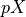

Note
This page is a reference documentation. It only explains the class signature, and not how to use it. Please refer to the user guide for the big picture.
3.6.4. nistats.regression.SimpleRegressionResults¶
-
class
nistats.regression.SimpleRegressionResults(results)¶ This class contains only information of the model fit necessary for contast computation.
Its intended to save memory when details of the model are unnecessary.
-
__init__(self, results)¶ See LikelihoodModelResults constructor.
The only difference is that the whitened Y and residual values are stored for a regression model.
-
Fcontrast(self, matrix, dispersion=None, invcov=None)¶ Compute an Fcontrast for a contrast matrix matrix.
Here, matrix M is assumed to be non-singular. More precisely

is assumed invertible. Here,  is the generalized inverse of the design matrix of the model. There can be problems in non-OLS models where the rank of the covariance of the noise is not full.
See the contrast module to see how to specify contrasts. In particular, the matrices from these contrasts will always be non-singular in the sense above.
- Parameters
- matrix1D array-like
contrast matrix
- dispersionNone or float, optional
If None, use
self.dispersion- invcovNone or array, optional
Known inverse of variance covariance matrix. If None, calculate this matrix.
- Returns
- f_res
FContrastResultsinstance with attributes F, df_den, df_num
- f_res
Notes
For F contrasts, we now specify an effect and covariance
-
Tcontrast(self, matrix, store=('t', 'effect', 'sd'), dispersion=None)¶ Compute a Tcontrast for a row vector matrix
To get the t-statistic for a single column, use the ‘t’ method.
- Parameters
- matrix1D array-like
contrast matrix
- storesequence, optional
components of t to store in results output object. Defaults to all components (‘t’, ‘effect’, ‘sd’).
- dispersionNone or float, optional
- Returns
- res
TContrastResultsobject
- res
-
conf_int(self, alpha=0.05, cols=None, dispersion=None)¶ The confidence interval of the specified theta estimates.
- Parameters
- alphafloat, optional
The alpha level for the confidence interval. ie., alpha = .05 returns a 95% confidence interval.
- colstuple, optional
cols specifies which confidence intervals to return
- dispersionNone or scalar
scale factor for the variance / covariance (see class docstring and
vcovmethod docstring)
- Returns
- cisndarray
cis is shape
(len(cols), 2)where each row contains [lower, upper] for the given entry in cols
Notes
Confidence intervals are two-tailed.
- tailsstring, optional
Possible values: ‘two’ | ‘upper’ | ‘lower’
Examples
>>> from numpy.random import standard_normal as stan >>> from nistats.regression import OLSModel >>> x = np.hstack((stan((30,1)),stan((30,1)),stan((30,1)))) >>> beta=np.array([3.25, 1.5, 7.0]) >>> y = np.dot(x,beta) + stan((30)) >>> model = OLSModel(x).fit(y) >>> confidence_intervals = model.conf_int(cols=(1,2))
-
logL(self, Y)¶ The maximized log-likelihood
-
norm_resid(self, Y)¶ Residuals, normalized to have unit length.
Notes
Is this supposed to return “stanardized residuals,” residuals standardized to have mean zero and approximately unit variance?
d_i = e_i / sqrt(MS_E)
Where MS_E = SSE / (n - k)
- See: Montgomery and Peck 3.2.1 p. 68
Davidson and MacKinnon 15.2 p 662
-
predicted(self)¶ Return linear predictor values from a design matrix.
-
resid(self, Y)¶ Residuals from the fit.
-
t(self, column=None)¶ Return the (Wald) t-statistic for a given parameter estimate.
Use Tcontrast for more complicated (Wald) t-statistics.
-
vcov(self, matrix=None, column=None, dispersion=None, other=None)¶ Variance/covariance matrix of linear contrast
- Parameters
- matrix: (dim, self.theta.shape[0]) array, optional
numerical contrast specification, where
dimrefers to the ‘dimension’ of the contrast i.e. 1 for t contrasts, 1 or more for F contrasts.- column: int, optional
alternative way of specifying contrasts (column index)
- dispersion: float or (n_voxels,) array, optional
value(s) for the dispersion parameters
- other: (dim, self.theta.shape[0]) array, optional
alternative contrast specification (?)
- Returns
- cov: (dim, dim) or (n_voxels, dim, dim) array
the estimated covariance matrix/matrices
- Returns the variance/covariance matrix of a linear contrast of the
- estimates of theta, multiplied by dispersion which will often be an
- estimate of dispersion, like, sigma^2.
- The covariance of interest is either specified as a (set of) column(s)
- or a matrix.
-